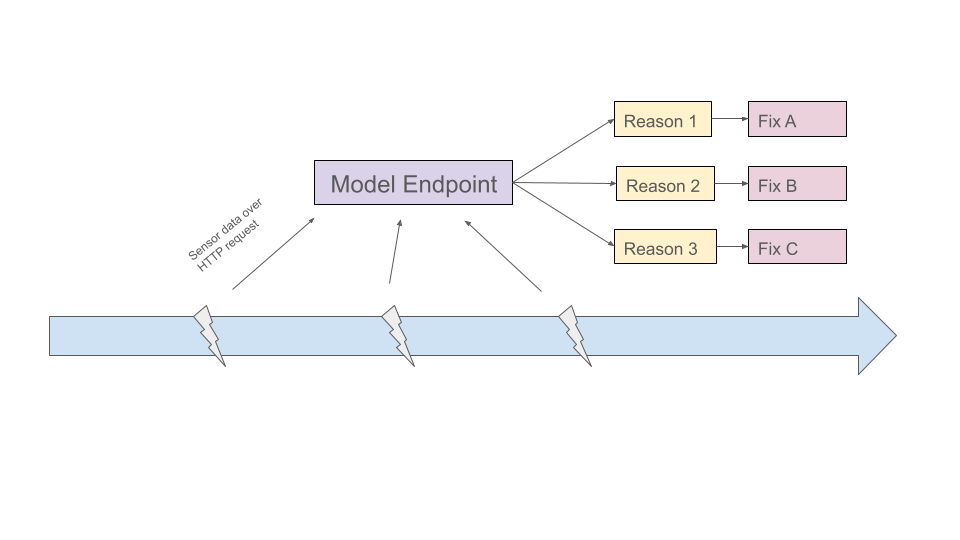
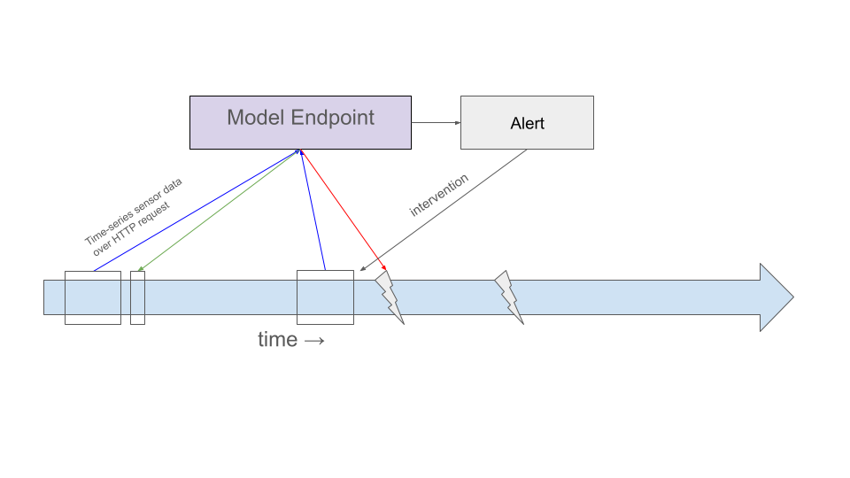
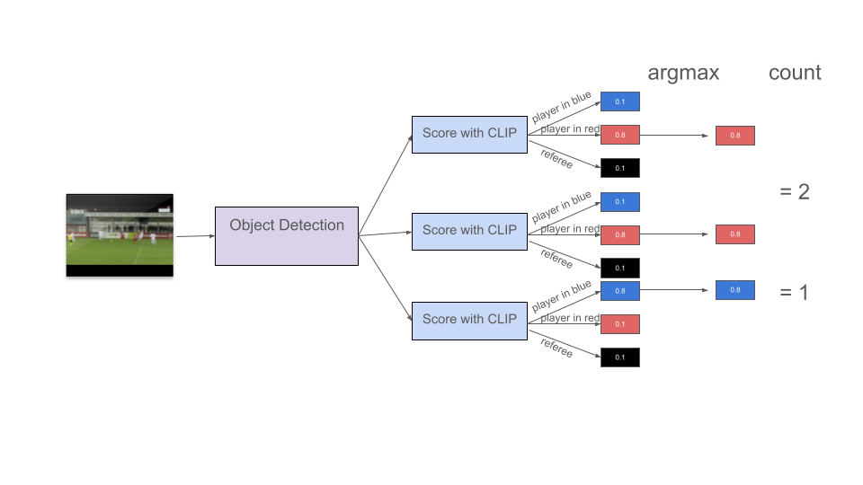

Model packaged as an OutageClusterer class with a sklearn-style interface (source):
clusterer = OutageClusterer()clusterer.fit_predict(data) # train on labelled + unlabelled dataclusterer.predict(new_data) # classify new breakdownsclusterer.save("model.pkl") # persist to disk
Served via a FastAPI endpoint — breakdown event sends sensor readings, endpoint returns the predicted failure category.
On Google Cloud this can be containerised and deployed to Cloud Run, which scales to 0 if not used.
Prerequisites before deployment
Label more data — currently we only evaluate on training data. For validating this logic as a classifier, 100 more labels would be needed.
Consider a non-linear classifier on the full labelled set as a more robust solution
Deployment Architecture
Outage classification setup
Breakdown triggers and event that sends current sensor status to model
Model endpoint that receives sensor data from event triggered on breakdown
Returns predicted outage category, which can be handled to resolve the problem quicker by sending alerts to the dedicated experts.

Value Extended
More value could be provided to Customer A by building a forward looking model on sensor timeseries data as they could intervene before the outage happens.

Outage forecasting setup
With small time intervals, sending sensor timeseries to model
Model endpoint that receives sensor data and predicts outage + type
Model sends out alerts that allow for manual intervention and prevention
Roadmap
Simple
Week
Objective
Client input
Risk
1
Feasibility study & model development (done)
Provide labelled data (done)
Low
2
Validate classifier on additional labelled data
Label 100 more breakdowns
Medium (delay)
3–4
Build & test deployment pipeline
Access to infrastructure
Medium
5
Model monitoring & alerting setup
-
Low
Extended
Week
Objective
Client input
Risk
—
Dependency: historical timeseries data available
Provide timeseries export
High
6
Build timeseries classifier
—
High
7–8
Deploy timeseries classifier
Access to infrastructure
Medium
9
Monitoring & alerting for timeseries model
Define intervention thresholds
Low
Weeks 1–5 (Junior Engineer) run in parallel with weeks 6–9 (Senior Engineer) once the data dependency is resolved.
Use Case 2 — Sports Analytics
Problem Statement
Customer B has gathered video data of soccer games
Goal: determine how many players per team are visible on screen at any given time
Why does this matter?
Combined with position on the field this can guide offensive or defensive actions and calculate further statistics for trainers
Assistance to commentators in real-time
I will present some approaches that we can weigh
Self-hosted approach 1&2
Prelimenary: detection
Both approaches start with detecting all people in each frame:
Detectron2 (Meta) — Apache 2.0, free for commercial use
YOLO (Ultralytics) — AGPL-3.0, requires enterprise license for commercial use
Filter non-playes non-trivial (YOLO might help here)
Need to host 2 models (object detection + embedding)
Approach 2: Zero-shot with CLIP
Score each player crop against text labels using CLIP
Examples: "player in red", "player in white", "referee"
Assign the label with the highest score
Count per label per frame

Approach 2: Zero-shot with CLIP
Score each player crop against text labels using CLIP
Examples: "player in red", "player in white", "referee"
Assign the label with the highest score
Count per label per frame
Pros:
Might be more precise than unsupervised
Scales to other use cases more easily
Cons:
Generating text-labels non-trivial
Need to host 2 models (object detection + classifcation)
Approach 3: Managed Vision APIs
Several managed APIs exist (Google Video Intelligence, AWS Rekognition, Azure Video Indexer, Roboflow)
Selection depends on client infrastructure preferences and quality vs cost benchmarking
Pros:
Easy to implement and prototype
Cheaper for small volumes
Cons:
Propieritary data leaves your company
Expensive for large volumes
Vendor lock-in
Approach Comparison
Unsupervised
Zero-shot
Managed API
Precision
Lower
Higher
High
Text labels needed
No
Yes
No
Models to host
2
2
0
License
Apache 2.0/AGPL-3.0
Apache 2.0/AGPL-3.0
Proprietary
Data leaves premises
No
No
Yes
Cost at scale
Low
Low
High
Implementation effort
High
High
Low
Deployment
In order to determine the deployment of these approaches, we need to know:
Batch vs Real-time:
For batch predictions that we can run at request or scheduled, latency is less of an issue. GPU preemptible.
For real-time inference we need to build for speed. Managed APIs are probably not an option due to network delays. Live GPU instance.
Low or high-volume:
Low volumes could be cheaper through a managed API.
High volumes are better self-hosted as the cost scales better.
Note: The managed API approach has a hard requirement of data leaving the premise.
Deployment for self-hosted batch processing
Scheduled job that polls every (6, 12, 24) hours for new videos uploaded
Spin up single GPU (like T4) should be enough to run both models (sequentially)
Timestamped predictions uploaded to data warehouse for further processing
Deployment for self-hosted real-time processing
Endpoint for model inference on a video stream
Constant live GPU (like T4) to run both models
Scale horizontally if we need multiple concurrency
Live predictions stream
Roadmap
Our recommended road-map is to - Prototype with managed Vision APIs (MVP) - Build out own solution if proven value
Week
Objective
Client input
Risk
1
Ideation + requirement collection (done)
Requirements
Low
2 & 3
Managed API protyping
Quality assessment
Low
4 - 6
Develop self-hosted model
Labelled validation data
High
7 & 8
Deploy self-hosted approach
Infrastructure access
Medium
Open Questions Sports Analytics
How much data have they collected? Is it annotated?
What is the resolution of inference.
“At any given time” is constant/streaming
Does it need to be real-time?
Is all the data from the same camera/field/position or is it wildly different?
Appendix
Timeseries outage prediction 1. Collect timeseries sensor data before these 1600 outages + ~1600 points in well operating times. - Length depends on the resolution and structure of the data - Label will be wether an outage occured in predetermined window that leaves customer with ample time to respond.
Extract features like lagged values, seasonal patterns, trends.
Train a non-linear classifier like gradient boosting tree to classify outage vs non-outage.